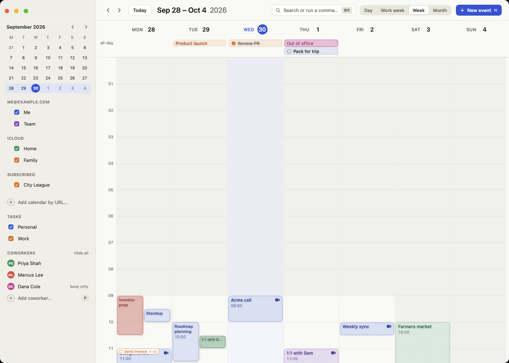
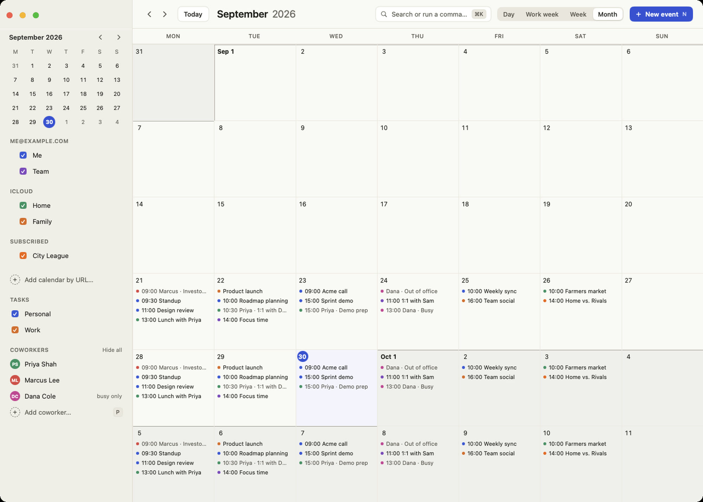
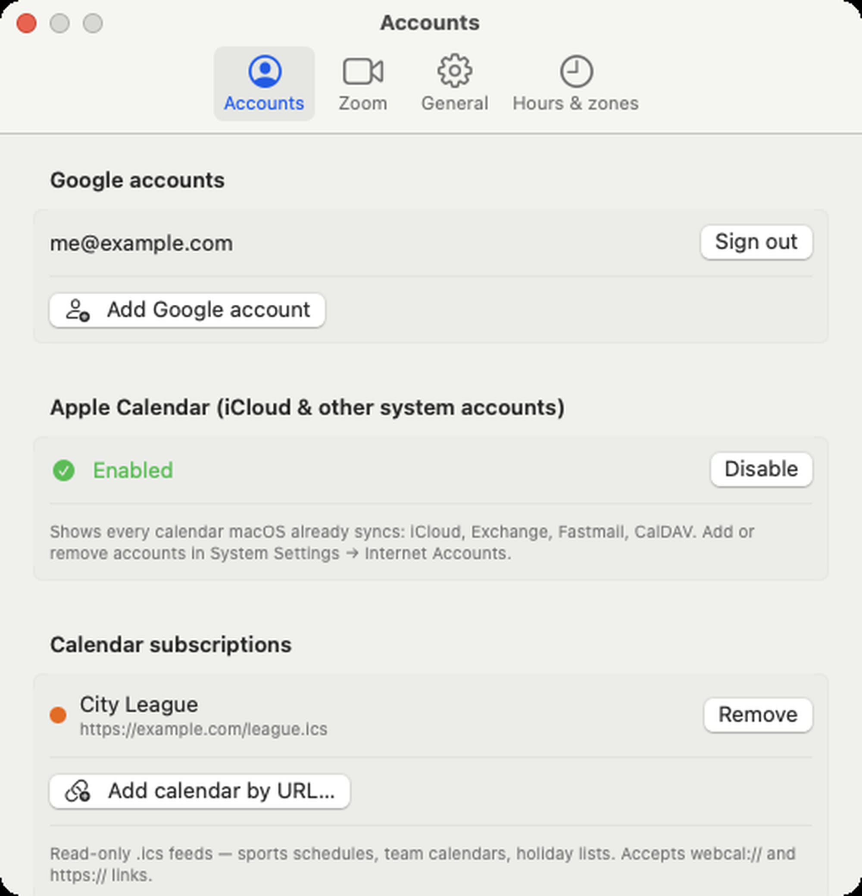

Day, work week, week and month
Switch views with D 5 W M. The grid opens scrolled to the start of your working day, and hours outside your working hours are shaded. Two-finger swipes glide a day at a time rather than jumping a whole week.
Open-source · macOS 14+ · SwiftUI · MIT
EZCal is a native Mac app that puts Google Calendar, Apple Calendar accounts, subscribed .ics feeds and Reminders in one grid. This page walks through what it does, what it deliberately doesn't, and where the rough edges are.

Feature tour
Everything below is from the app as it ships. Clips are short and unedited, recorded against built-in demo data.
Switch views with D 5 W M. The grid opens scrolled to the start of your working day, and hours outside your working hours are shaded. Two-finger swipes glide a day at a time rather than jumping a whole week.
Search events, jump to natural-language dates like "next friday", show or hide a coworker, or run any command in the app. It's the fastest way to do almost everything, which is the point.
Click or drag on the grid to create an event at that time, or press N. Save with ⌘↩. Recurring events ask whether a change applies to this event, this and following, or all. Pick Zoom or Google Meet from the editor, and an availability warning appears while you invite people.
Arrow keys walk between events. ⌥↓ moves the focused event 15 minutes later; ⌥⇧↓ resizes it. With a mouse, drag a block to move it (snapping to 15 minutes, across day columns) or drag its bottom edge to resize. esc cancels a drag mid-gesture.
Search your Google Workspace directory, click a person, and their calendar appears in your grid. If they share details you see full events; if only availability is shared you see dashed "Busy" blocks; if nothing is shared you get a warning icon. The same meeting on several calendars is drawn once.
Workspace directory search needs a Workspace account. On personal Gmail you can still add people by email.

Press ⌘F in the editor. EZCal lists the best slots where every attendee it can see is free, with a per-day availability grid. People whose calendars aren't shared show as "unknown" and never block a slot, so treat results as a strong suggestion, not a guarantee.
Every event with a Zoom, Meet or Teams link gets a Join button; J joins the focused event or your next meeting. Zoom meetings are real: created through the Zoom API with your defaults (waiting room, mute on entry, passcode and so on), updated when you move the event, and deleted when you delete it. A menu bar item shows your next meeting, and optional reminders arrive a few minutes before with a Join action.

Sign in with multiple Google accounts. Any account macOS already syncs (iCloud, Exchange, Fastmail, CalDAV) appears too, with no passwords or API keys. Paste a webcal:// or https:// link to subscribe to a sports schedule or shared team calendar: read-only, refreshed in the background. Events present on more than one source are de-duplicated.

Due-dated Apple Reminders appear as chips in the all-day row or small timed markers, with a checkbox to complete them. Quick-add from ⌘K: task: call dentist tomorrow 3pm. There's no task editor; anything beyond create and complete happens in Reminders.app.

Pros & cons
Drawn from the project's own documentation of what works and what doesn't.
.ics feeds side by side, de-duplicated..ics subscriptions skip per-occurrence overrides and some RRULE forms.UNTIL isn't handled correctly yet..ics feeds fall back to your Mac's time zone.Keyboard
Press ? in the app for the full cheat sheet.
Install
brew install --cask kamden-rasmussen/tap/ezcalReleases are signed and notarized. Update with brew update && brew upgrade --cask ezcal; the app also tells you when a new version is out.
scripts/build_app.sh --runNeeds macOS 14+ and Xcode / Swift 5.9+. For Google or Zoom sign-in you supply your own OAuth client; iCloud and Apple Calendar need no setup at all.
EZCAL_DEMO=1 build/EZCal.app/Contents/MacOS/EZCalDemo mode loads fake calendars and events and touches none of your accounts. Every screenshot and clip on this page was recorded this way.
Is it for you?